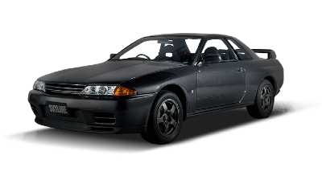
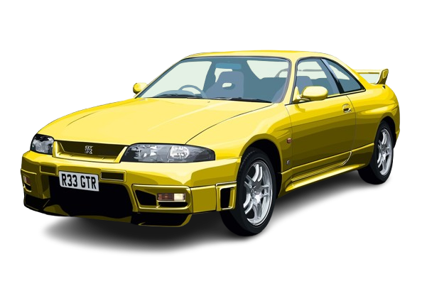
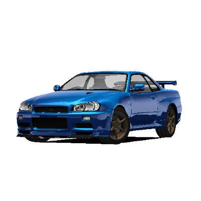
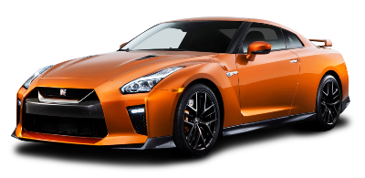

Nissan GT-R
Nissan Skyline GT-R R32 (1989-1994)
- Typ: Coupe
- Silnik: 2.6L twin-turbo RB26DETT inline-6
- Moc: 276 KM (oficjalnie)
- Ciekawostka: Znany jako "Godzilla" ze względu na dominację w wyścigach.

Nissan Skyline GT-R R33 (1995-1998)
- Typ: Coupe
- Silnik: 2.6L twin-turbo RB26DETT inline-6
- Moc: 276 KM (oficjalnie)
- Ciekawostka: Pierwszy GT-R, który pokonał tor Nürburgring w czasie poniżej 8 minut.

Nissan Skyline GT-R R34 (1999-2002)
- Typ: Coupe
- Silnik: 2.6L twin-turbo RB26DETT inline-6
- Moc: 276 KM (oficjalnie), do 330 KM w niektórych wersjach
- Ciekawostka: Ostatni model z serii Skyline GT-R, ikona kultury popowej.

Nissan GT-R R35 (2007-obecnie)
- Typ: Coupe
- Silnik: 3.8L twin-turbo VR38DETT V6
- Moc: 485-600 KM (zależnie od wersji i roku produkcji)
- Ciekawostka: Pierwszy GT-R bez nazwy Skyline, znany z niezwykłych osiągów i zaawansowanej technologii.
